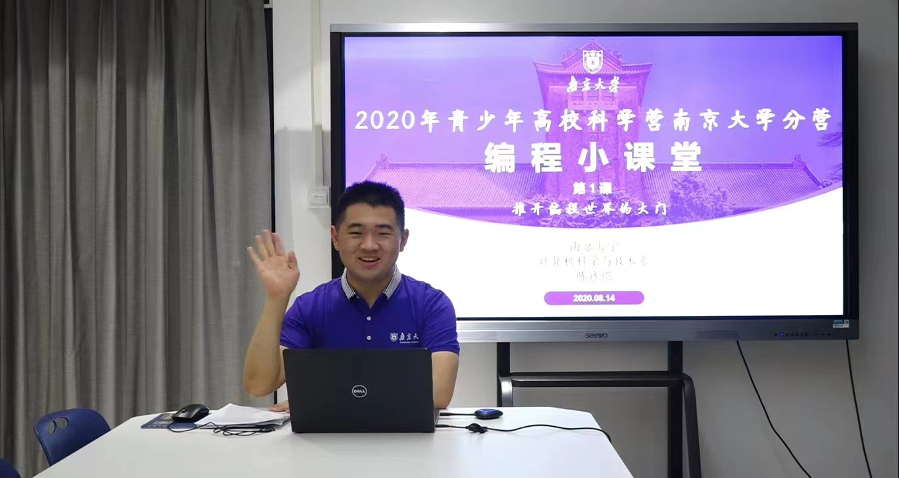

2022年青少年高校科学营·南京大学分营 – 编程小课堂
基本信息
|
授课人：陈彦恺（南京大学计算机科学与技术系）、唐瑞泽（南京大学计算机科学与技术系） 授课时间：【正课】2022年7月11日、12日、14日、15日 每天下午16:00-17:30（北京时间）
授课地点：【正课】高校科学营线上活动平台、哔哩哔哩（备用）
联系方式：chenyankai # smail.nju.edu.cn（请将“ # ”替换为“@”） 参考资料：[1] 本书编写组. 普通高中教科书 高中数学 必修3[M]. 南京：江苏教育出版社, 2017.01. 教学大纲：Syllabus_2022.pdf *未尽事宜请参见营员手册或咨询带队辅导员。 |
|---|
课程安排
| 课号 | 日期 | 主题 | 教师 | 回放 | 课件 | 素材 | 备注 |
| 第1课 | 7月11日 | 推开编程世界的大门 | 陈彦恺 | 正课 答疑课 |
Lecture 1.pdf | Windows安装包 MacOS安装包 Hello_NJU.sb3 |
嗨，你好呀！欢迎来到编程小课堂~ 接下来的几天，让我们一同探索神奇的编程世界吧！ 准备好了吗？我们出发咯~ |
| 第2课 | 7月12日 | 搭建小小的编程世界 | 唐瑞泽 | 正课 答疑课 |
小试牛刀- Lecture 2 |
进入第2天，相信各位一定有所收获。 “纵使思忖千百度，不如亲手下地锄”， 明天不安排课程，大家可以自己动手尝试做一些小项目~ |
|
| 第3课 | 7月14日 | 在编程世界中更上一层楼 | 陈彦恺 | 正课 答疑课 |
Lecture 3.pdf | 找不同.sb3 | “欲穷千里目，更上一层楼”， 而这“高楼”，正是用一块块“积木”一步一步搭起来的。 更多创意的玩法，等你自己去发现~ (๑╹◡╹)ﾉ" |
| 第4课 | 7月15日 | 设计自己的游戏！ | 唐瑞泽 | 正课 答疑课 |
小试牛刀- Lecture 4 |
5天欢乐时光转瞬即逝，感谢大家的悉心支持，后会有期！ 记得参加编程大赛哦~期待各位创意非凡的作品！^_^ |
编程大赛
|
大赛主题：心向南兮，以梦为“码” 活动内容：结合南大元素，发挥想象力，利用Scratch 3.0进行编程，制作出较为完整且有创意的作品。具体内容不限，只需与南京大学相关即可。 截止时间：2022年7月16日 24:00:00（北京时间） 提交方式：点击链接https://box.nju.edu.cn/u/d/869a1ed43ebf463caee5/，提交生成的sb3文件。
评价标准：评审小组将通过作品的创意性、逻辑性、复杂性，以及代码的精简性、可读性等方面综合评定，分别确定出特等奖、一等奖、二等奖、三等奖各若干名。 温馨提示：⚠️学术规范与学术诚信是科学研究以及实践过程当中最为重要的一部分。请各位同学谨记：规范做事、诚信做人。在本次编程大赛中，请独立完成任务，并严格按照命名格式要求，在规定的时间前，通过指定的渠道提交作品。若出现违反学术规范与学术诚信原则的情况，一经查实，将予以酌情扣分，直至取消评奖资格的处理。 参考素材：南京大学美图 南京大学音乐 （提取密码：nju2022） 历年优秀作品：点此下载（仅供参考，不得抄袭） *未尽事宜请参见营员手册或咨询带队辅导员。 |
|---|
媒体报道
|
南京大学计算机科学与技术系的陈彦恺和唐瑞泽两位同学带领大家“搭建小小的编程世界”，通过编程系列课程的聆听和小组交流学习，营员们加深了对编程的认知。同时，为了激发学生的创新精神，科学营组织了“心向南兮，以梦为‘码’”编程大赛，收到了大量高质量的作品…… |
 |
|---|
|
其次给我留下深刻印象的就是编程入门课程，由于高一刚刚学好信息科技，这一部分对于我来说并不算困难。我们所用的是Scratch软件，此软件编程好比“搭积木”，对于我们来说，对比高中所用的VB来言，趣味程度上升了不止一个台阶。尤其是我们的陈彦恺老师他的认真负责，使我非常感动。第三节编程课程，是上午最后一节课。在观看完视频后，陈老师与我们在线答疑，帮助我们把知识缕了一遍，且对于同学的问题一一解答，只要他在评论区看到的问题，都会一一耐心仔细的解答，且为同学们一一演示。就这样，过了饭点，陈老师不顾饥饿，还在为我们解答，并在结束前关心我们：“赶紧去吃饭吧！好好休息！”我无不为他这种负责的态度感动。在此，我也想对我们的陈老师和唐老师说一声：“谢谢你们！” ——上海科学教育中心 |
 |
|---|
特别致谢
|
感谢共青团南京大学委员会对本课程的大力支持。
|
|---|